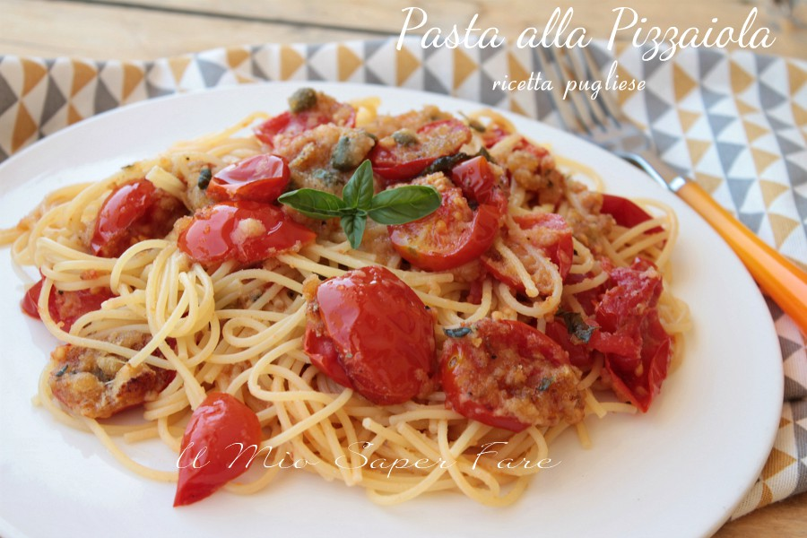

Home
Spaghettini in brodo alla pizzaiola

Avete voglia di qualcosa di meno convenzionale? Ecco una ricetta per voi!
Questo piatto mi è stato fatto per la prima volta da mia suocera e l'ho amato da subito per il suo sapore e per la sua particolarità.
Scopriamolo assieme!
Ingredienti:
- Spaghettini
- Lonza di maiale e salsiccia
- Sale
- Passata
- Origano
Ecco la preparazione di questa primizia
- Brodo con Carne
- Aggiungi origano e passata
- Lascia cucinare per un paio d'ore
- Col brodo a bollore, cuoci direttamente gli spaghetti nella pentola del brodo
- Servi e gusta!